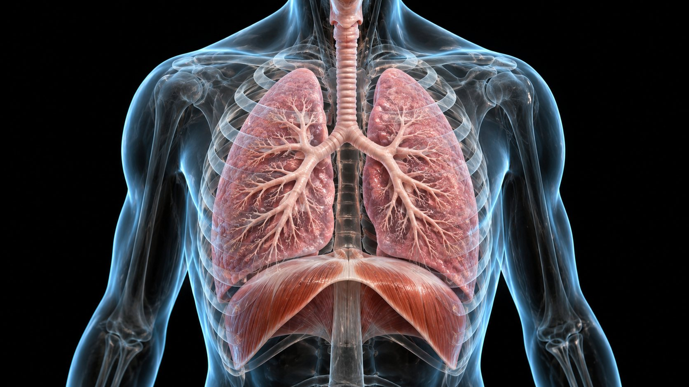
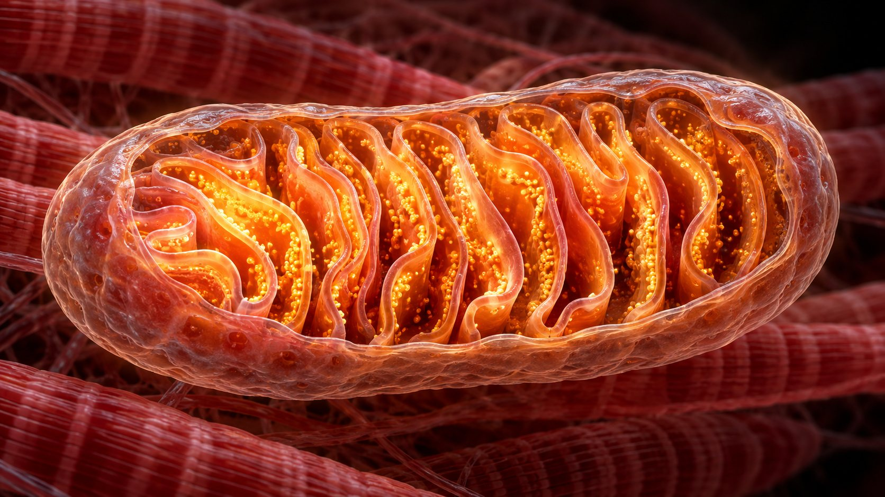

강의 목록
순서대로 들으면 흐름이 이어집니다
운동과 순환
새 장: 몸속 실험실 — 운동 강도를 올리며 심박수·1회 박출량·혈압·혈류 분배가 바뀌는 것을 직접 본다. 체순환·폐순환, 심전도와 Wiggers 도표, 심박출량과 1회 박출량, 정맥환류, 혈류 재분배, 픽 원리, 심혈관 표류, 지구성 심장 적응

운동과 호흡
새 장: 몸속 실험실 — 강도에 따라 일회 호흡량·호흡수·환기량과 폐포 속 가스 교환이 바뀌는 것을 직접 본다. 사강과 폐포 환기량, 폐용적, 분압과 픽의 확산 법칙, 산소해리곡선, 환기역치·젖산역치, 호흡교환율, 산소결핍과 EPOC

운동과 에너지 대사
새 장: 몸속 실험실 — 30초 전력 질주 동안 근육 속 ATP·PCr 변화를 직접 재생해 본다. ATP-PCr·해당과정·유산소, 속도조절효소, 탈진 시간별 에너지 시스템, 젖산과 코리 회로, 연료 교차, 운동 중 호르몬

운동과 신경근 생리
새 장: 몸속 실험실 — 힘을 올리면 운동단위가 크기 순서로 켜지고 발화 빈도가 오르는 것을 직접 본다. 근수축 기전과 근절, 활동전위와 운동단위, 근섬유 유형, 수축 형태와 힘-속도, 근방추·골지건기관과 반사, 근력 적응

운동과 내분비
새 장: 몸속 실험실 — 3시간 운동 동안 혈당·호르몬·간과 근육의 연료가 바뀌는 것을 탄수화물 섭취 여부와 함께 본다. 분비선과 호르몬, 운동 중 호르몬 반응, 혈당을 지키는 네 가지 길, 카테콜아민과 지방 동원, 인슐린 민감도, ADH·알도스테론
빈칸은 하나씩
문장이 빈칸으로 먼저 나오고, 클릭할 때마다 답이 하나씩 채워집니다. 먼저 떠올려 보고 넘기세요.
기출 그대로 · 변형
각 강의에 기출 원문 문제와, 같은 자료로 조금 다르게 묻는 변형 문제가 들어 있습니다. 모범답안까지 함께 봅니다.
조작
→ Space 다음 · ← 이전 · T 대본 · O 전체 보기 · F 전체 화면. 폰에서는 좌우로 밀어 넘깁니다.